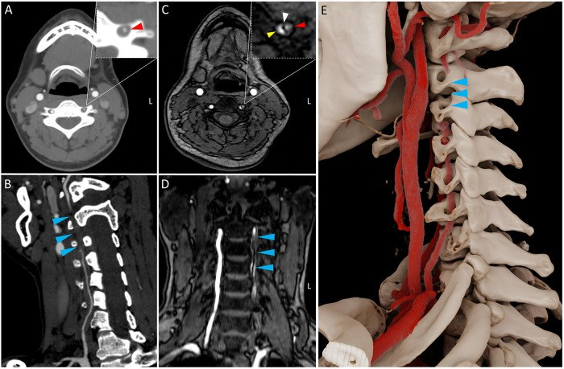
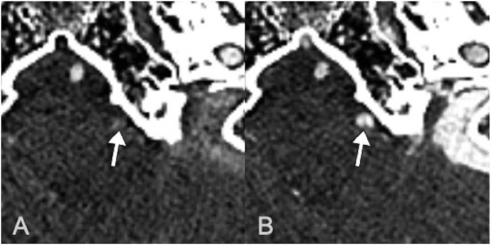
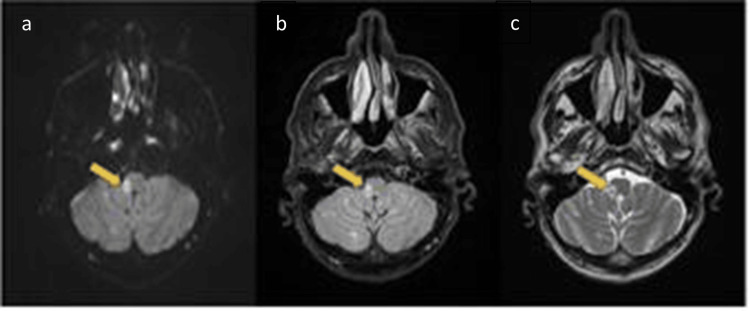

1775 — Bóc tách động mạch đốt sống / Vertebral artery dissection (VAD)
Tags: pattern:hai-long pattern:vat-noi-mac pattern:huyet-khoi-thanh-mach pattern:hep-dai-doan pattern:tac-mach pattern:liem-tang-tin-hieu-T1 pattern:nhoi-mau-hanh-nao vung:tuy-song vung:nao vung:co score:Denver protocol:CTA protocol:MRA protocol:MRI-T1-fat-sat protocol:DSA incidentaloma:khong
Mức chắc chắn (certainty): tổng hợp y văn (literature synthesis) — 2 thử nghiệm ngẫu nhiên về kháng huyết khối ở bóc tách mạch cổ (CADISS 250 ca; TREAT-CAD 194 ca), 2 đoàn hệ dịch tễ (Olmsted 123 ca; Iceland 107 ca), 1 nghiên cứu bệnh–chứng theo từng mạch về bất thường giải phẫu xương–mạch ở VAD không do chấn thương (191 bệnh nhân CTA), các ca có ảnh gốc và 1 bài tổng quan chấn thương VAD. 3 ca trong quiz là ca công bố, lấy nguyên văn ảnh gốc.
Câu chốt: đau cổ–chẩm một bên sau xoay/ngửa cổ hoặc sau xoa bóp cổ, kèm chóng mặt–nhìn đôi–mất thăng bằng là VAD cho tới khi chứng minh ngược. CTA là bước đầu, nhưng CTA thì sớm có thể ÂM TÍNH; chốt chẩn đoán là liềm tăng tín hiệu trong thành mạch trên T1 fat-sat/black-blood (huyết khối trong thành) và hẹp dài–vót nhọn bắt đầu ở V2–V3. Đừng nhầm động mạch đốt sống thiểu sản tận cùng bằng PICA với tắc do bóc tách, và đừng bỏ bóc tách V4 nội sọ vì thể này chảy máu dưới nhện chứ không chỉ gây nhồi máu.
1. Tổng quan bệnh học – cơ chế hình ảnh
1.1 Giải phẫu quyết định vị trí tổn thương
Động mạch đốt sống chia 4 đoạn:
| Đoạn | Đường đi | Vì sao dễ bị bóc tách / bỏ sót |
|---|---|---|
| V1 | Nguyên ủy dưới đòn → lỗ ngang C6 | Ngắn, ít di động; hay bị xơ vữa và chấn thương xuyên thấu |
| V2 | Trong lỗ ngang C6–C2 | Bị xương bao quanh: chấn thương xoay/ngửa cổ tạo lực cắt; siêu âm bị xương che, CTA dễ có giả ảnh do bờ xương |
| V3 | Ra khỏi C2 → quai quanh C1 → xuyên màng cứng | Đoạn di động nhất (C1–C2 xoay), căng–gấp khi ngửa/xoay cổ; đây là nơi bóc tách do tư thế, xoa bóp cổ, chỉnh hình cột sống cổ |
| V4 | Xuyên màng cứng → hợp thành động mạch nền | Nội sọ, không có lớp mô bao quanh → dễ vỡ vào khoang dưới nhện (SAH); nhánh PICA → nhồi máu hành não bên (Wallenberg) |
- V2 và V3 chiếm phần lớn VAD vì vừa cố định trong xương vừa chịu lực xoay của cột sống cổ; bài bệnh–chứng theo từng mạch còn cho thấy bất thường giải phẫu xương–mạch (cung xương bao quanh V3, lỗ vào cao của V2, dị tật C1–C2) làm tăng nguy cơ.
- V4 khác hẳn về hậu quả: thành mạch trong khoang dưới nhện không có mô đệm, nên khi rách nội mạc – trung mạc, máu có thể vỡ tự do vào DNT thay vì chỉ tạo huyết khối trong thành.
1.2 Cơ chế: từ vết rách nội mạc đến nhồi máu và chảy máu
- Rách nội mạc → máu động mạch ép vào lớp trung mạc → tạo lòng giả và huyết khối trong thành (intramural hematoma, IMH). Lòng thật bị ép hẹp dần kiểu vót nhọn, có khi tắc hoàn toàn.
- Nhồi máu không phải do hẹp tại chỗ là chính, mà do thuyên tắc từ huyết khối trong lòng giả/lòng thật rồi trôi lên động mạch nền – PCA – PICA. Vì vậy mạch có thể chỉ hẹp 50% mà vẫn nhồi máu lớn; ngược lại tắc mạn tính có tuần hoàn bàng hệ có thể không triệu chứng.
- V4 vỡ: máu vào khoang dưới nhện → SAH, co mạch, giãn não thất; nguy cơ chảy máu lại rất cao trong 24–72 giờ đầu nếu không can thiệp.
1.3 TẠI SAO thấy được trên từng chuỗi xung (vật lý + mô bệnh)
- T1 fat-sat / T1 black-blood (SPACE, VISTA, CUBE): hemoglobin trong huyết khối chuyển thành methemoglobin → thời gian T1 ngắn → tăng tín hiệu. Đây là dấu hiệu duy nhất nhìn trực tiếp thành mạch, không phụ thuộc dòng chảy, nên là chốt chẩn đoán.
- Diễn tiến tín hiệu: < 48–72 giờ T1 còn trung gian/đồng tín hiệu → âm tính giả; sau 3–7 ngày T1 tăng rõ và giữ vài tuần; sau vài tháng có thể trở về đồng tín hiệu → T1 âm không loại trừ bóc tách cũ.
- Bắt buộc bão hòa mỡ: mỡ quanh mạch cổ rất sáng trên T1; không fat-sat thì dải mỡ che mất liềm IMH.
- CTA: thấy lòng mạch, không thấy thành. Dấu hiệu: hẹp dài–nhẵn–vót nhọn ("string sign"), tắc hình ngọn lửa, vạt nội mạc, hai lòng, phình giả. Vì lòng giả chảy chậm, thì sớm có thể không đủ thuốc vào lòng giả → ảnh âm tính giả; thì muộn 40–60 giây làm rõ vạt nội mạc và lòng giả.
- MRA TOF: nhạy với hẹp/tắc nhưng kém với vạt nội mạc và IMH; dễ giả hẹp do dòng chảy xoáy.
- DSA: chuẩn vàng, thấy hai lòng, vạt nội mạc, phình giả, tuần hoàn bàng hệ, và là đường can thiệp khi V4 vỡ.
- Siêu âm Doppler: hữu ích ở V1–V2 gần, nhưng V2 trong lỗ ngang và V3 sau C1 bị xương che → không đủ để loại trừ VAD.
1.4 Số liệu nền (bắt buộc thuộc)
- Dịch tễ: bóc tách động mạch cảnh–đốt sống ≈ 2,5–4,7/100.000 người–năm; riêng động mạch đốt sống ≈ 1,0–2,0/100.000/năm (Olmsted: 2,01/100.000). VAD chiếm khoảng 1/3–1/2 tổng số bóc tách mạch cổ.
- Tuổi: 15–25% đột quỵ ở người < 50 tuổi là do bóc tách mạch cổ; VAD là nguyên nhân nhồi máu tuần hoàn sau hay gặp ở người trẻ.
- Triệu chứng: đau cổ–chẩm 70–90%, đau đầu, chóng mặt/vertigo, nhìn đôi, nói khó, thất điều; Horner gặp ở bóc tách cảnh nhiều hơn; nhồi máu hành não bên khi tổn thương V4/PICA.
- Tái phát: ≈ 2,4% trong năm đầu (CADISS), phần lớn trong 2 tuần đầu; bóc tách tái phát ≈ 4,6% trong đoàn hệ Iceland.
- Tái thông: chỉ ≈ 40% mạch thông hoàn toàn ở 3 tháng; 60% còn hẹp/tắc — nhưng hẹp tồn dư không đồng nghĩa còn nguy cơ.
2. Mẫu hình + chẩn đoán phân biệt theo vị trí (gamut)
2.1 Theo đoạn mạch
- V1: xơ vữa (người lớn tuổi, có yếu tố nguy cơ, vôi hóa), chấn thương xuyên thấu, bóc tách do ống thông.
- V2: bóc tách (hay gặp nhất), thiểu sản V2, chèn ép do gai xương/thoái hóa, bất thường lỗ ngang.
- V3: bóc tách do tư thế (xoay/ngửa cổ, xoa bóp, chỉnh hình), hội chứng Bow Hunter (chèn ép động khi xoay cổ), cung xương C1 (arcuate foramen).
- V4: bóc tách nội sọ + SAH, nhồi máu PICA/Wallenberg, huyết khối động mạch nền, phình giả bóc tách.
2.2 Theo hình thái — 4 câu hỏi trên CTA/MRA
- Có hẹp dài–vót nhọn không? → nghĩ bóc tách hoặc xơ vữa.
- Có vạt nội mạc/hai lòng không? → gần như chốt bóc tách.
- Có liềm tăng tín hiệu T1 trong thành không? → chốt IMH.
- Có phình giả hoặc máu dưới nhện không? → quyết định can thiệp nội mạch, không chỉ kháng huyết khối.
Gamut "hẹp dài ở động mạch đốt sống": bóc tách · xơ vữa · loạn sản cơ–sợi (FMD, "chuỗi hạt") · co mạch/RCVS · thiểu sản bẩm sinh · chèn ép động (Bow Hunter) · viêm mạch · tia xạ.
3. Bảng so sánh phân biệt (ma trận đối chiếu)
| Thực thể (entity) | Hình ảnh điển hình | Chốt vào (rule-in) | Chốt loại (rule-out) | Gợi ý xác nhận |
|---|---|---|---|---|
| Bóc tách VAD (IMH) | Hẹp dài–vót nhọn bắt đầu V2–V3, vạt nội mạc, hai lòng, liềm tăng tín hiệu T1 fat-sat trong thành | Liềm T1 tăng tín hiệu + hẹp vót nhọn không vôi | Không có IMH, mảng xơ vữa vôi hóa lệch tâm → nghĩ xơ vữa | MRI 3D T1 black-blood fat-sat + CTA (thì muộn nếu cần) |
| Mảng xơ vữa | Người > 50 tuổi, có ĐTĐ/hút thuốc, vôi hóa, hẹp lệch tâm, thường ở V1 hoặc chỗ phân nhánh | Vôi hóa + nhiều ổ xơ vữa + yếu tố nguy cơ | Liềm T1 tăng tín hiệu + hẹp dài nhẵn → bóc tách | CTA, siêu âm mạch |
| Loạn sản cơ–sợi (FMD) | "Chuỗi hạt" nhiều chỗ hẹp–giãn xen kẽ, thường động mạch cảnh trong, có thể đốt sống; không IMH | Nhiều đoạn hẹp–giãn xen kẽ, hai bên | Một đoạn hẹp dài đơn độc + IMH → bóc tách | CTA/DSA toàn bộ mạch cổ–thận |
| Thiểu sản V4 tận cùng bằng PICA | V4 nhỏ đều, không vạt, không IMH, tận cùng PICA, bên đối diện bù trừ | Mạch nhỏ nhưng đều, bẩm sinh, không triệu chứng cấp | Hẹp mới + IMH + đau cổ cấp → bóc tách | MRA/CTA so sánh hai bên; MRI T1 fat-sat âm |
| Bow Hunter (chèn ép khi xoay cổ) | Hẹp/tắc V3 chỉ khi xoay cổ, hết khi trả tư thế; không IMH | Hẹp động theo tư thế trên DSA/CTA xoay cổ | Hẹp cố định mọi tư thế + IMH → bóc tách | DSA/CTA động (xoay đầu 45–90°) |
| Bóc tách V4 vỡ (SAH) | Máu dưới nhện bể nền, phình giả/vạt ở V4, giãn não thất | SAH + bất thường V4 trên CTA/DSA | SAH do phình túi thường ở vòng tuần hoàn trước | DSA 4 mạch; can thiệp nội mạch |

Bóc tách động mạch đốt sống trái: A CT trục, B CTA dọc (mũi tên xanh: đoạn hẹp/vạt), C T1 black-blood trục (mũi tên trắng: bất thường thành mạch), D MRA dựng hình, E dựng hình 3D xương–mạch cho thấy đoạn V2–V3. Nguồn: Liu J et al., J Belg Soc Radiol 2025 (PMC12742373), CC BY 4.0.3.1 Ba dấu hiệu phải đọc thành thạo
- String sign (dấu sợi chỉ): hẹp dài, nhẵn, vót nhọn — không đặc hiệu, gặp cả xơ vữa và co mạch; chỉ chốt khi có IMH.
- Intimal flap (vạt nội mạc): dải tuyến tính trong lòng mạch, chốt bóc tách; dễ thấy hơn trên CT photon-counting hoặc thì muộn.
- Liềm IMH trên T1 fat-sat: dải tăng tín hiệu bám thành, không thay đổi theo tư thế, khác đám rối tĩnh mạch quanh mạch (ở ngoài thành, thay đổi theo thì/tư thế).
4. Protocol chụp + phân độ
4.1 Chọn chuỗi xung
- CTA đầu–cổ (bước đầu): lát 0,6–1 mm, bơm 4–5 mL/s, theo dõi bolus; thì muộn 40–60 giây khi nghi ngờ mà thì sớm âm tính. CTA gộp có độ nhạy cao với hẹp/tắc nhưng thấp hơn với vạt nội mạc nhỏ.
- MRI (chốt thành mạch): DWI (tìm nhồi máu cấp) + TOF-MRA + 3D T1 black-blood fat-sat (1 mm, trước tiêm; có thể sau tiêm để thấy niêm mạc lòng giả). T1 3D VISTA: Se 95,2% / Sp 100%; T1 SPACE: Se 96,5% / Sp 94,5% trong chẩn đoán bóc tách mạch cổ.
- DSA: khi CTA/MRI không kết luận, khi V4 vỡ/SAH, hoặc trước can thiệp (stent, coil, flow diverter).
- Siêu âm Doppler: chỉ để sàng lọc/t heo dõi V1–V2 gần; không dùng để loại trừ VAD ở V2–V3.
4.2 Phân độ hình thái (dùng cho theo dõi và can thiệp)
- Theo mức hẹp: < 50% · 50–99% · tắc hoàn toàn.
- Theo biến chứng: IMH đơn thuần · phình giả bóc tách · tắc có/không có nhồi máu · V4 vỡ (SAH).
- Thang Denver cho chấn thương mạch cổ (BCVI) — dùng khi VAD do chấn thương: I hẹp < 25%, II hẹp ≥ 25%, III phình giả, IV tắc, V đứt mạch. Denver ≥ III thường cần can thiệp/theo dõi sát.
flowchart TD
A[Nghi bóc tách động mạch đốt sống: đau cổ–chẩm + triệu chứng tuần hoàn sau] --> B[CTA đầu–cổ]
B -->|Dương tính| C[Chốt: hẹp/vạt/IMH]
B -->|Âm tính nhưng nghi cao| D[MRI: DWI + TOF-MRA + T1 black-blood fat-sat]
D -->|Liềm T1 dương| C
D -->|Vẫn âm| E[DSA khi còn nghi ngờ hoặc trước can thiệp]
C --> F{Có SAH hoặc phình giả lớn?}
F -->|Có| G[Can thiệp nội mạch: stent/coil/flow diverter]
F -->|Không| H[Kháng kết tập tiểu cầu HOẶC kháng đông 3–6 tháng]
H --> I[CTA/MRI lặp 3 tháng; theo dõi tái thông/tái phát]
4.3 Điều trị — bằng chứng và ngưỡng
- Kháng kết tập tiểu cầu vs kháng đông: CADISS (250 ca) không khác biệt về đột quỵ/tử vong (≈ 2% mỗi nhóm), tái phát 2,4%/năm; TREAT-CAD (194 ca) không chứng minh được aspirin không thua kém kháng đông (xu hướng nghiêng kháng đông, chưa có ý nghĩa thống kê). Không có bằng chứng cứng buộc một lựa chọn — chọn theo ổ nhồi máu lớn hay không, nguy cơ xuất huyết, có SAH hay không.
- Thời gian: thường 3–6 tháng, rồi quyết định theo hình ảnh tái thông và triệu chứng.
- Can thiệp nội mạch (stent/coil/flow diverter): thiếu máu tái diễn dù đã điều trị nội, phình giả lớn/lớn dần, chống chỉ định kháng đông, hoặc V4 vỡ có SAH. Không dùng kháng kết tập mạnh ngay khi đang có SAH.
- V4 vỡ: ưu tiên nút mạch/coil/stent phủ/flow diverter để loại ổ rách khỏi dòng chảy; không chờ vì nguy cơ chảy máu lại trong 24–72 giờ rất cao.
5. Biến thể bình thường và cạm bẫy
- Thiểu sản V4 tận cùng PICA: mạch nhỏ đều, không IMH, thường không triệu chứng cấp; đừng gọi là tắc.
- Cửa sổ mạch (fenestration): hai lòng đều ngấm thuốc, không có vạt; trên MRA dễ giả "hai lòng".
- Đám rối tĩnh mạch quanh mạch: tăng tín hiệu ngoài thành, thay đổi theo thì; IMH nằm trong thành, hình liềm, bám dọc.
- Beam hardening do xương ở V2: tạo dải giả hẹp trên CTA; so sánh với MRA/MRI và đọc đa mặt phẳng.
- CTA thì sớm âm tính: lòng giả chảy chậm — chụp thì muộn trước khi kết luận âm tính.

Cùng một bệnh nhân bóc tách động mạch đốt sống: A (thì sớm) động mạch đốt sống trái hiển thị kém; B (thì muộn) thấy rõ vạt nội mạc + thuốc trong lòng giả. Bài học: thì sớm âm tính không loại trừ bóc tách. Nguồn: Matsumoto K et al., Radiol Case Rep 2026 (PMC13528219), CC BY-NC-ND 4.0 — giữ nguyên khung, không cắt.- T1 âm trong 48–72 giờ đầu: methemoglobin chưa hình thành; nếu nghi cao, lặp MRI sau 2–3 ngày hoặc dựa CTA/DSA.
- Bóc tách mạn: T1 có thể trở về đồng tín hiệu sau vài tháng; đừng loại trừ dựa vào một lần T1 âm.
- Bow Hunter: hẹp chỉ khi xoay cổ — CTA/DSA tĩnh sẽ bỏ sót; hỏi kỹ tư thế khởi phát và chụp động.
- Satisfaction of search: thấy nhồi máu tiểu não/hành não rồi dừng — phải truy tìm mạch (CTA/MRA) vì nhồi máu là hậu quả, không phải chẩn đoán.
6. Tự lượng giá — Blind Quiz
Ca 1 — Nam 35 tuổi, đau cổ–chẩm phải đột ngột sau xoa bóp cổ, sau đó chóng mặt, nói khó, tê bì nửa người. MRI sọ:

- Gợi ý: ba chuỗi (a) DWI, (b) FLAIR, (c) T2; chú ý hành não bên phải.
- Câu hỏi: ổ tổn thương ở đâu, thuộc lãnh thổ mạch nào? Chẩn đoán mạch nền là gì? Cần chụp gì tiếp?
Bấm để hiện đáp án (findings + chẩn đoán)
- Findings: ổ hạn chế khuếch tán nhỏ ở hành não bên phải (mũi tên vàng), tăng tín hiệu FLAIR/T2 tương ứng — nhồi máu hành não bên (Wallenberg).
- Chẩn đoán: bóc tách động mạch đốt sống phải đoạn V4/PICA gây nhồi máu; đau cổ sau xoa bóp là tiền triệu.
- Việc cần làm: CTA đầu–cổ + MRI T1 black-blood fat-sat tìm liềm IMH; nếu có SAH → DSA và cân nhắc can thiệp nội mạch. Không dừng ở "nhồi máu não trẻ".
- Nguồn ảnh: Remelhe Sá S et al., Cureus 2025;17(12):e100355 (PMC12851604), CC BY 4.0. Ca gốc có giảm 50% lòng mạch V4.
Ca 2 — Nữ 42 tuổi, đau cổ trái, nhìn đôi, đi loạng choạng sau ngửa cổ làm tóc. CTA/MRA:
- Câu hỏi: tổn thương ở đoạn nào của động mạch đốt sống? Ba dấu hiệu trên ảnh? Vì sao không được chỉ dùng siêu âm?
Bấm để hiện đáp án (findings + chẩn đoán)
- Findings: hẹp dài–vót nhọn ở V2–V3 trái (B, D), bất thường thành mạch trên T1 black-blood (C) — huyết khối trong thành; dựng hình 3D (E) cho thấy mạch chạy trong lỗ ngang.
- Chẩn đoán: bóc tách động mạch đốt sống trái; cơ chế xoay/ngửa cổ.
- Vì sao không chỉ siêu âm: V2 trong lỗ ngang và V3 sau C1 bị xương che, nên siêu âm có thể bình thường dù bóc tách. Cần CTA/MRI.
- Điều trị: kháng kết tập hoặc kháng đông 3–6 tháng (CADISS/TREAT-CAD); stent nếu thiếu máu tái diễn hoặc phình giả lớn.
- Nguồn ảnh: Liu J, Jia P, Ji Q. J Belg Soc Radiol 2025;109(1):70 (PMC12742373), CC BY 4.0.
Bài liên quan chéo
- 200 – Tổng quan Hệ Thần kinh
- 1773 – Bóc tách động mạch cảnh cổ (cùng bệnh cảnh, khác đoạn mạch)
- 211 – Đột quỵ não
- 247 – Bóc tách động mạch cổ/đốt sống & chấn thương mạch cổ (BCVI)
- 1770 – Tắc tĩnh mạch cảnh trong hai bên sau xạ
Không dùng để chẩn đoán độc lập khi chưa có người hướng dẫn.